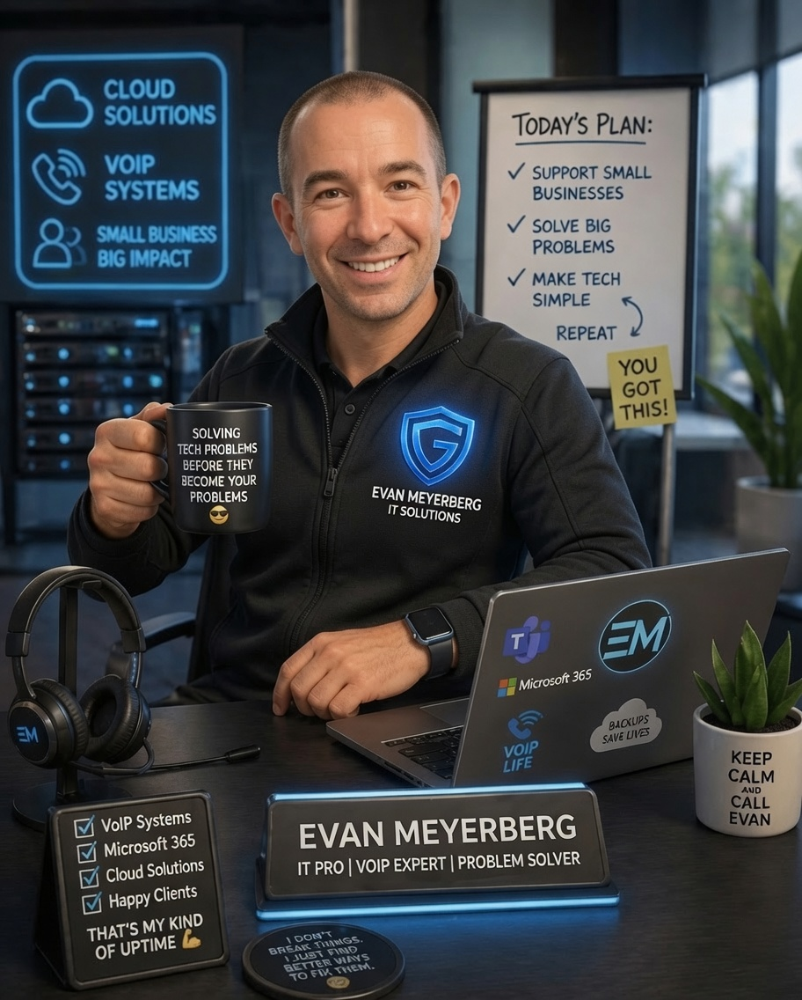

Greatchoice Technologies is a privately owned managed IT services company headquartered in Ocala, Florida. Serving Ocala and North Central Florida since 2015. Started by former Vonage Lead Technical Instructor, Evan Meyerberg, we have helped businesses manage, secure, and improve the technology they rely on every day. We manage the technology that keeps your business secure, connected, productive, and growing.
More than three decades of proven expertise and a genuine commitment to client success.
Industry Experience
Our founder's background in pioneering VoIP and mobile communication technology brings deep technical expertise and forward-thinking solutions to every project. Combined experience of over 50 years in multiple technology based degrees.
We are certified cyber engineers from Cloudflare. Every technician is trained on how to secure networks, isolate threats, create VPNs and ensure your business is secured from a technical standpoint.
Local Partnership
Based in Ocala and serving the North Central Florida region, we understand local business needs and provide personalized, responsive service that truly cares about your success.
Quality Focused
Every project receives dedicated attention to detail, strategic thinking, and custom solutions that align with your business goals—not cookie-cutter templates.
Empowering Businesses
We help businesses across Ocala and Central Florida keep their technology secure, connected, and running smoothly. Our goal is simple; make technology easy to manage so business owners can focus on running their business.
Meet the face behind greatchoice

Evan Meyerberg
Founder & Owner, Greatchoice Technologies
35+ years of technology and business leadership
Key contributor to VoIP innovation at Vonage during its inception
Pioneered the first mobile VoIP application, reshaping how people communicate
Ocala resident since 2015, deeply invested in the community
Involved in local BNI Leadership for 10 years
Proud partner of the Ocala CEP
Evan's approach is straightforward: solve the problem, explain the options clearly, and make sure the technology supports the business instead of slowing it down. Whether it's a full network upgrade, a business phone system, cybersecurity planning, or ongoing IT support, Evan helps guide the technical direction behind every GreatChoice solution.
Our Journey
2007
Evan started at Vonage, becoming the technical lead instructor globally.
2010
The business formed. Started Greatchoice, bringing managed IT services to businesses.
2015
Serving Ocala and North Central Florida since 2015. Opened in Ocala and expanded services to VoIP, cybersecurity, and cloud solutions.
Working with GreatChoice Technologies has been an excellent business decision! It’s so comforting to know when you have computer and tech issues that they’re just a phone call or text away. The Greatchoice team is knowledgeable, responsive, and genuinely committed to keeping our business running smoothly. Whether it's day-to-day technical support, cybersecurity, or proactively preventing issues before they happen, they consistently deliver exceptional service. Their expertise allows us to focus on serving our clients, knowing our technology is in capable hands.
I highly recommend GreatChoice Technologies to any business looking for a trusted IT partner that delivers outstanding service, reliable support, and real peace of mind.
Greatchoice Technologies has been an incredible resource for all of us at Stone Creek Senior Health. Any issue we come across, new idea we want to get into place, or anything else that may come up, everyone there is always quick to respond and help us get it taken care of in a timely manner. They’re typically able to do things remotely, so our wait time is very, very minimal. Our business runs so much more efficiently and effectively since we began working with Greatchoice. You couldn’t ask for a better team.
Working with Evan Meyerberg and the team at Greatchoice Technologies has been one of the best decisions I've made for my business. They are always the first to answer the call — no matter the issue, no matter the time. Whenever one of my clients runs into a technical problem, Evan and his team jump in, resolve it quickly, and keep everything running smoothly.
Beyond fixing issues, they consistently offer smart, practical advice that helps me and my clients make better technology decisions. I can always count on them, and honestly, they make me look great in front of my clients. Having a partner this reliable gives me total peace of mind.
If you're looking for a technology team that truly delivers, I can't recommend Greatchoice Technologies highly enough.